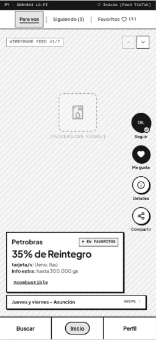
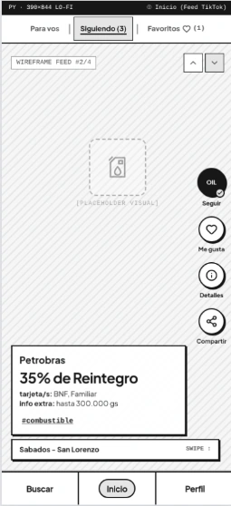
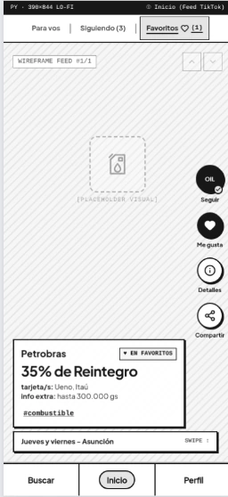
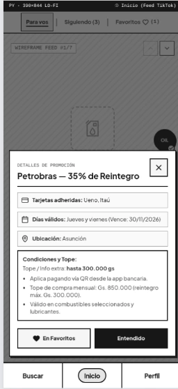
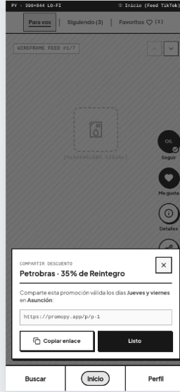

Información tardía.
36 de 53 participantes conocen ofertas después de comprar al menos a veces. La aplicación debe facilitar el descubrimiento antes del pago.
PromoPY reúne descuentos y reintegros bancarios en una experiencia móvil pensada para las compras cotidianas en Paraguay.
La información está dispersa entre redes sociales, aplicaciones bancarias, carteles y recomendaciones. Para aprovechar una oferta, las personas deben conocerla, comprobar si aplica a su tarjeta y decidir si todavía les conviene.
“Sí, ya me pasó. Me sentí frustrada, enojada, porque hubiera ahorrado.”Participante 4 · entrevista de descubrimiento
La oportunidad perdida aparece como una experiencia emocional, no solo económica.
Combinamos encuestas, entrevistas y análisis cualitativo para identificar hábitos de compra, canales de información y obstáculos para aprovechar promociones.
Respuestas a la pregunta de edad
Entrevistas: 4 presenciales y 1 virtual
Se entera de ofertas después de comprar, al menos a veces
Busca activamente descuentos (4 o 5 de 5)
Base: 53 respuestas en las preguntas sobre descuentos; 56 en la pregunta de edad. Estudio exploratorio, no representativo de toda la población.
Pregunta 7 · selección múltiple · n=53.
Pregunta 3 · selección múltiple · n=53.
36 de 53 participantes conocen ofertas después de comprar al menos a veces. La aplicación debe facilitar el descubrimiento antes del pago.
Las ofertas llegan por redes, carteles y conversaciones. Un lugar centralizado reduce el esfuerzo de buscarlas.
Las entrevistas revelan que el tiempo, la distancia, la comodidad y la calidad también determinan si vale la pena aprovechar una oferta.
Agrupamos comportamientos de planificación, sensibilidad al precio, canales de información, barreras de acceso, presión económica y necesidades.
Ver diagrama original ↗Un entrevistado no usa tarjetas de crédito ni busca ofertas. El producto se enfoca en usuarios que sí valoran el ahorro; no pretende convertir a todos los compradores.
Fuente: Presentación de datos, pp. 2–15. Los porcentajes se calculan con los recuentos de cada pregunta.
Entender qué hace cada persona antes de comprar permitió definir una experiencia que se adapte a distintas prioridades: presupuesto, tiempo y certeza.
21 años · Estudiante y trabajador
El estudiante cazador de ofertas.
32 años · Empleado de oficina
El empleado pragmático y acelerado.
28 años · Emprendedor independiente
El emprendedor que optimiza sus gastos.
Personas de diseño sintetizadas en la documentación del equipo; no son entrevistas individuales.
Presión por el presupuesto, poco tiempo y frustración frente a información dispersa.
Publicaciones en redes, carteles en comercios y múltiples canales bancarios.
Recomendaciones de amigos, familiares y notificaciones poco contextualizadas.
Planifica compras, revisa ocasionalmente beneficios y decide bajo presión de tiempo.
Comparar fuentes, verificar condiciones y evitar enterarse tarde de un reintegro.
Encontrar información clara, pertinente y oportuna con menos esfuerzo.
| Momento | Antes | Durante | Después |
|---|---|---|---|
| Acción | Planificar compras y buscar ofertas. | Elegir comercio y medio de pago. | Revisar el gasto y descubrir si perdió algún beneficio. |
| Fricción | Información dispersa y búsqueda manual. | Desconocimiento de las condiciones en el punto de pago. | Frustración por una oportunidad perdida. |
| Oportunidad | Centralizar beneficios y personalizar el descubrimiento. | Mostrar tarjetas aplicables, días y topes. | Guardar y compartir ofertas para próximas compras. |
Síntesis de los mapas originales: Presentación de datos, pp. 15–23.
A partir de los Points of View, el equipo formuló preguntas How Might We y exploró posibles soluciones.
Exploración: recomendaciones y avisos según tarjetas e intereses.
Exploración: tarjetas visuales, buscador y filtros por categoría y banco.
Exploración: fichas con vigencia, topes, restricciones y ubicación.
Preguntas sintetizadas de User Stories y Requisitos, pp. 2–5. No todas las ideas exploradas se materializaron en el prototipo.
Seis historias de usuario traducen los objetivos de las personas en requisitos concretos. La cobertura que mostramos corresponde a las pantallas entregadas, no a una aplicación en producción.
Como comprador frecuente, quiero recibir avisos sobre beneficios vigentes para no perder oportunidades.
Feed visible · avisos no demostradosComo planificador semanal, quiero conocer los días de descuento para organizar mis visitas.
Días visibles · calendario no demostradoComo usuario de varias tarjetas, quiero saber cuáles aplican a cada beneficio.
Representada en prototipoComo usuario con preferencias, quiero seleccionar rubros y comercios para recibir información relevante.
Rubros y filtros visiblesComo responsable del presupuesto, quiero revisar topes, restricciones y fechas antes de comprar.
Representada en prototipoComo miembro de un entorno social, quiero compartir promociones con sus detalles.
Acción visible · ejecución no verificadaReconstrucción editorial a partir de las historias y pantallas entregadas. No representa un User Story Mapping original ni una priorización formal del equipo.
| Actividades | Descubrir | Buscar y verificar | Personalizar |
|---|---|---|---|
| Tareas | Explorar el feed Revisar beneficios Guardar y compartir | Buscar un comercio Filtrar por rubro o banco Consultar condiciones | Registrar tarjetas Elegir intereses Seleccionar ciudad |
| Historias asociadas | US 01 · US 02 · US 06 | US 03 · US 05 | US 03 · US 04 |
| Representación visual | Inicio / Para vos / Siguiendo / Guardados | Buscador / filtros / detalle | Perfil / tarjetas / intereses / ciudad |
| No demostrado | Notificaciones y recordatorios | Calendario semanal | Almacenamiento seguro y motor automático de personalización |
Fuente: User Stories y Requisitos, pp. 5–7; wireframes y prototipo.
Los 12 wireframes de baja fidelidad exploran la navegación, la jerarquía de información y las interacciones de los tres recorridos principales antes de definir el lenguaje visual.
Exploración del flujo vertical, pestañas y acciones.





Exploración de resultados, filtros y directorio de comercios.
Gestión de tarjetas, preferencias y ciudad.
El prototipo de alta fidelidad reúne 10 pantallas organizadas alrededor de descubrimiento, búsqueda y personalización. Las ofertas son ejemplos del prototipo, no promociones verificadas en tiempo real.
Un feed vertical inspirado en interfaces sociales pone en primer plano el porcentaje de reintegro, el comercio y la tarjeta. Las pestañas separan las recomendaciones, los beneficios seguidos y los guardados.
La búsqueda permite explorar por comercio, banco y rubro. Los filtros visibles y el listado de resultados condensan la información sin obligar al usuario a recorrer el feed completo.
La ficha reúne tarjetas admitidas, días válidos, ciudades, locales, tope y vencimiento. El usuario puede guardar o compartir la oferta desde el detalle.
El perfil permite configurar entidades, tipos de tarjeta, rubros de interés y ubicación. Estas preferencias definen el contexto de las promociones que se quieren descubrir.
La comparación muestra cómo se concretaron las decisiones visuales entre ambas fidelidades. Son diferencias observables en los materiales, no resultados de pruebas de usabilidad.
La estructura vertical se conserva, con mayor énfasis visual en el porcentaje y las acciones de guardado.
La grilla inicial evoluciona hacia un listado con datos de vigencia y filtros rápidos.
La configuración pasa a una vista tipo wallet, con tarjetas diferenciadas visualmente por entidad.
Los requisitos no funcionales definen criterios verificables de usabilidad. Se presentan como objetivos de evaluación, porque aún no se aportaron resultados de pruebas del prototipo.
Interacción rápida en el punto de cobro.
Usuario familiarizado identifica la mejor forma de pago.
Usuarios califican la aplicación como fácil o muy fácil.
Participantes manifiestan confianza en no perder un descuento.
Comprobar búsqueda sin ayuda, lectura de condiciones, configuración de tarjetas y tiempos de interacción. Revisar también legibilidad con luz ambiental intensa y uso con una sola mano.
Esta entrega documenta investigación y prototipado. No demuestra funcionamiento en producción, seguridad del almacenamiento, cobertura de ofertas reales ni impacto económico medido.
Fuente: requisitos no funcionales, User Stories y Requisitos, pp. 5–7.
El diseño propone reducir el esfuerzo de descubrir, comprobar y organizar beneficios bancarios, acercando la información relevante al momento de decidir una compra.
Documentos originales y tableros del proceso de diseño.
El mapa de historias de esta página es una reconstrucción a partir de la documentación. No se aportaron resultados de evaluación ni un prototipo interactivo original.